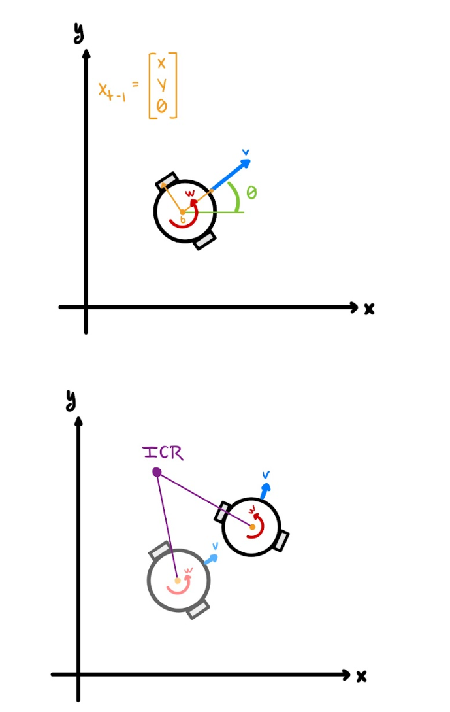
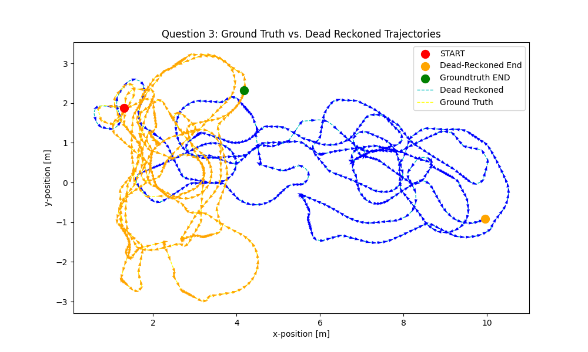
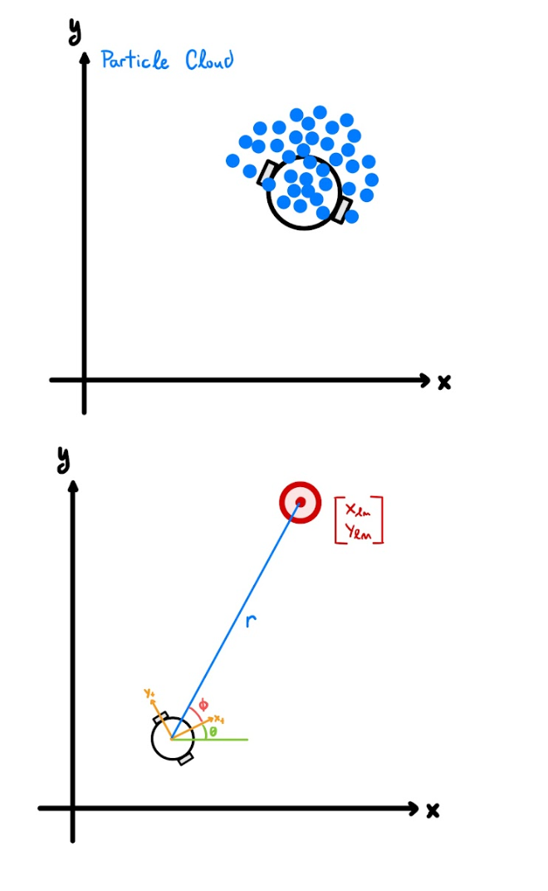
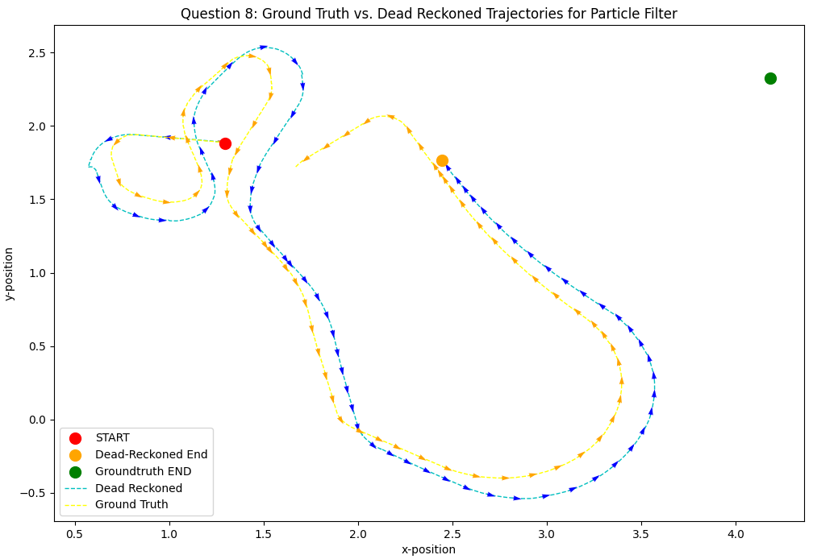
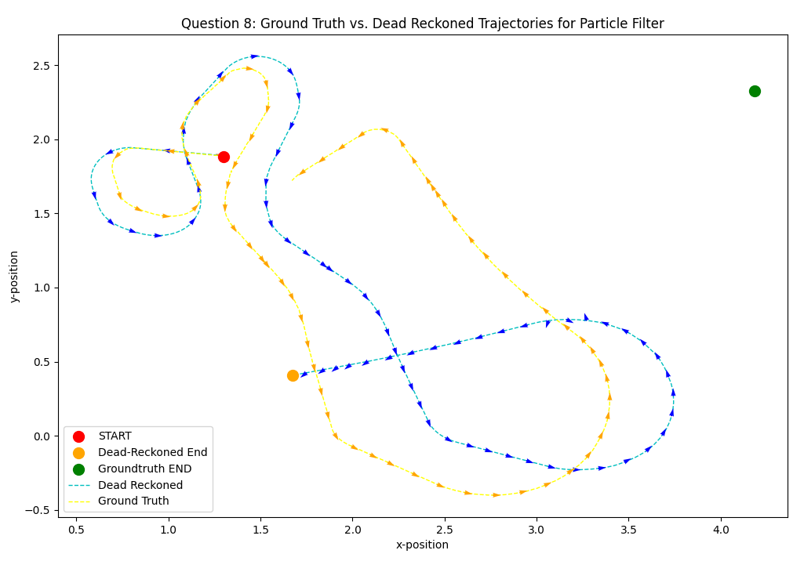

Probabilistic Filtering for Robot Localization
Modeling a differential-drive robot's noisy motion and building a particle filter from scratch to localize it against range-bearing landmark measurements.
Status: Completed · Fall 2025 (ME 469)
Overview
Robots rely on noisy sensors and actuators to estimate their own state, and doing this well is what makes higher-level task and motion planning possible in the first place. This project implements the probabilistic filtering pipeline that a mobile robot uses to answer the question "where am I?" from a stream of noisy velocity commands and noisy range-bearing landmark measurements. I built a nonlinear velocity motion model, a range-bearing measurement model, and a particle filter that fuses the two into a single, corrected state estimate. Unlike Gaussian filters (e.g. the Kalman filter family), which represent the belief as a single unimodal Gaussian, the particle filter used here is non-parametric: it represents the belief as a weighted cloud of discrete state samples, which lets it handle the nonlinear dynamics of a differential-drive robot without linearization.

Robot state representation \((x, y, \theta)\) and the Instantaneous Center of Rotation (ICR) used to derive the motion model.
Challenge
The core challenge is that a robot's velocity commands and sensor readings are never exact. Wheel slip and imperfect motor commands mean the robot rarely ends up exactly where it "should" be, and simply integrating (dead-reckoning) the commanded velocities over time compounds that error with every timestep. Running the raw motion model on a full logged dataset of control commands shows this clearly: even without any added process noise, the dead-reckoned path fails to track the ground-truth path, and adding realistic noise to the model makes it diverge even further, since there is no mechanism yet to correct the estimate using actual sensor measurements.

Dead-reckoned trajectory (orange) vs. ground truth (blue) over the full command dataset — with no landmark correction, the estimate drifts substantially.
Approach
I first derived a nonlinear velocity motion model using the Instantaneous Center of Rotation (ICR), following the differential-drive kinematics from Dudek & Jenkin combined with the noise-injection scheme from Probabilistic Robotics (Thrun, Fox & Burgard). Given a previous state \(x_{t-1}\) and commanded velocities \(u_t = (v, w)\), the model perturbs the velocities with sampled noise before propagating the state forward:
\(\hat{v} = v + sample(\alpha_1|v| + \alpha_2|w|)\)
\(\hat{w} = w + sample(\alpha_3|v| + \alpha_4|w|)\)
\(\gamma = sample(\alpha_5|v| + \alpha_6|w|)\)
where \(sample(b) = \frac{b}{6}\sum_{i=1}^{12} rand(-1,1)\) approximates a zero-mean Gaussian, and the six \(\alpha\) parameters independently tune how much the linear and angular velocity noise couple into each other. Rotating the previous state about the ICR by the perturbed angular velocity and adding the perturbed heading drift \(\gamma\) yields the posterior state \(x_t\).

Range \(r\) and bearing \(\phi\) from the robot to a landmark at \((x_{lm}, y_{lm})\): \(r = \sqrt{(x_t-x_{lm})^2 + (y_t-y_{lm})^2}\), \(\phi = \tan^{-1}\!\big(\frac{y_t-y_{lm}}{x_t-x_{lm}}\big) - \theta\).
The particle filter ties the two models together. Each of \(M\) particles is propagated independently through the motion model, \(x_t^{[m]} \sim p(x_t \mid u_t, x_{t-1}^{[m]})\), so the noise parameters above directly control how much the particle cloud spreads out at each step. Every particle is then re-weighted using the actual range and bearing measurements: I compute a Gaussian likelihood for the range residual and another for the bearing residual at each landmark, multiply them together per particle, and normalize the resulting weights across the whole set. Particles are then resampled in proportion to their weight, so particles whose predicted measurements matched reality survive and particles that drifted away are pruned out. Tuning mattered a lot in practice — with all noise parameters at zero the particle cloud collapses to a single point (identical to plain dead reckoning, since there is no diversity left to resample from), while pushing the noise too high produces a cloud so spread out that individual trajectories become noisy and erratic. The best-performing configuration I found was \(\alpha_1=\alpha_2=0.3\), \(\alpha_3=\alpha_4=0.6\), \(\alpha_5=\alpha_6=1\), with 100–500 particles, a bearing measurement standard deviation of 0.02, and a range measurement standard deviation of 0.1.
Result
With measurement correction enabled, the particle filter's dead-reckoned path stayed within a few centimeters of the ground-truth trajectory for almost the entire run — a dramatic improvement over the meters of drift seen from the raw motion model alone, and the final endpoint error dropped to roughly 0.157 m. The particle cloud itself behaves exactly as the theory predicts: it expands during periods of uncertainty and compresses again once new measurements pull it back toward the true state.
Best-tuned particle filter output (cyan) vs. ground truth (yellow) over the full dataset.
To isolate exactly how much the landmark measurements were doing, I also compared a trajectory segment with and without them. When measurements were available the filter converged and tracked the true path; with measurements removed, the particle filter reduces to the same unweighted, uncorrected dead reckoning as the plain motion model and diverges in the same way — confirming that the correction step, not just the noise model, is what makes the filter work.

With measurements: the filter converges toward ground truth.

Without measurements: the filter diverges like plain dead reckoning.
Code & Full Report
The full write-up is available as a PDF. The implementation covers the motion model, the range-bearing measurement model, and the particle filter (sampling, weighting, and resampling), all run against a logged dataset of control commands and landmark measurements.